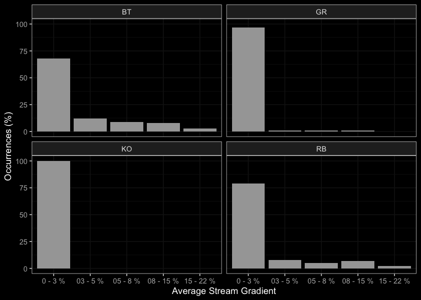
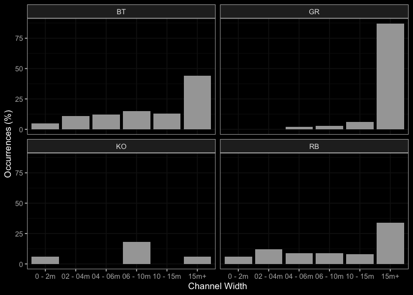

Results
0.3 Partnership Funding
SERN was able to aquire $105,000 of partnership funding from FLNR ($80,000) and the Provincial Fish Passage Technical Working Group ($25,000) towards the 2021/2022 program. Additionally, we have obtaines a commitment for $25,000 of partnership funding from the the Provincial Fish Passage Technical Working Group towards the 2022/2023 program.
0.4 Fisheries
# fiss_sum <- readr::read_csv(file = paste0(getwd(), '/data/extracted_inputs/fiss_sum.csv'))
fiss_sum_grad <- readr::read_csv(file = paste0(getwd(), '/data/inputs_extracted/fiss_sum_grad.csv'))
fiss_sum_width <- readr::read_csv(file = paste0(getwd(), '/data/inputs_extracted/fiss_sum_width.csv'))
fiss_sum_wshed <- readr::read_csv(file = paste0(getwd(), '/data/inputs_extracted/fiss_sum_wshed.csv'))
# A summary of historical westslope cutthrout trout observations in the Elk River watershed group by average gradient category of associated stream segment is provided in Figure \@ref(fig:fish-wct-bar). Of `r wct_elkr_grad %>% filter(gradient_id == 3) %>% pull(total)` observations, `r wct_elkr_grad %>% filter(gradient_id == 3) %>% pull(Percent) + wct_elkr_grad %>% filter(gradient_id == 5) %>% pull(Percent) + wct_elkr_grad %>% filter(gradient_id == 8) %>% pull(Percent)`% were within stream segments with average gradients ranging from 0 - 8%. A total of `r wct_elkr_grad %>% filter(gradient_id == 3) %>% pull(Percent)`% of historic observations were within stream segments with gradients between 0 - 3%, `r wct_elkr_grad %>% filter(gradient_id == 5) %>% pull(Percent)`% were within stream segments with gradients ranging from 3 - 5% and `r wct_elkr_grad %>% filter(gradient_id == 5) %>% pull(Percent)`% were within stream segments with gradients between 5 - 8% [@data_fish_obs; @norris2020bcfishobs]. ##bar graph
plot_grad <- fiss_sum_grad %>%
filter(gradient_id != 99) %>%
ggplot(aes(x = Gradient, y = Percent)) +
geom_bar(stat = "identity")+
facet_wrap(~species_code, ncol = 2)+
ggdark::dark_theme_bw(base_size = 11)+
labs(x = "Average Stream Gradient", y = "Occurrences (%)")
plot_grad

Figure 4: Summary of historic salmonid observations vs. stream gradient category for the Parsnip River watershed group.
##bar graph
plot_width <- fiss_sum_width %>%
filter(!is.na(width_id)) %>%
ggplot(aes(x = Width, y = Percent)) +
geom_bar(stat = "identity")+
facet_wrap(~species_code, ncol = 2)+
ggdark::dark_theme_bw(base_size = 11)+
labs(x = "Channel Width", y = "Occurrences (%)")
plot_width

Figure 5: Summary of historic salmonid observations vs. channel width category for the Parsnip River watershed group.
plot_wshed <- fiss_sum_wshed %>%
filter(!is.na(upstream_area_ha)) %>%
ggplot(aes(x = Watershed, y = Percent)) +
geom_bar(stat = "identity")+
facet_wrap(~species_code, ncol = 2)+
ggdark::dark_theme_bw(base_size = 11)+
labs(x = "Watershed Area", y = "Occurrences (%)")+
theme(axis.text.x=element_text(angle = 45, hjust = 1))
plot_wshed